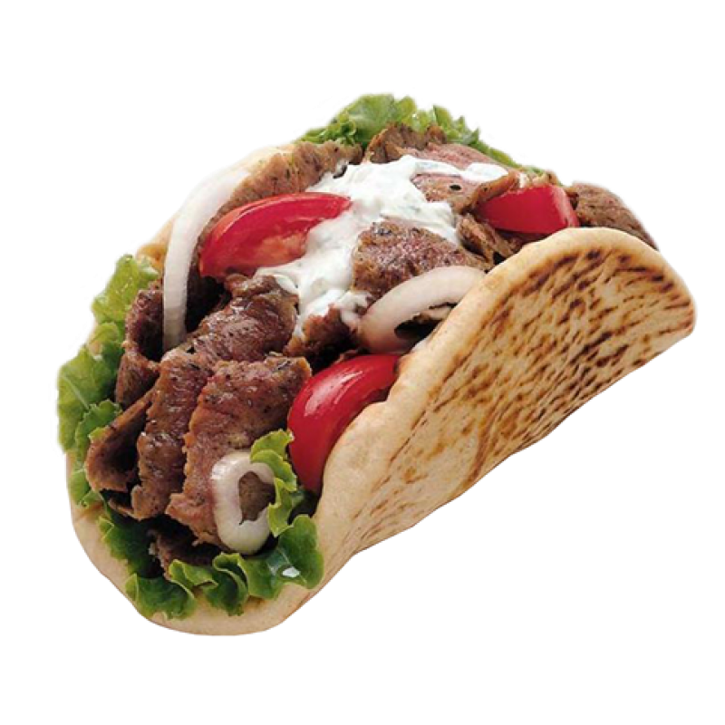

 Special Restaurant
Background
The narrative our map is telling is the amount of Syrian and Middle Eastern refugees that have immigrated to the Atlanta area since 2006 have had an effect on Atlanta's food diversity. Our map also showcases the Mediterranean and Syrian organizations and restaurants in the Atlanta area and their growth from 2006 to today. This furthers the narrative of how the refugees have brought their own food and culture to Atlanta.
History
The Syrian population has faced a Civil War since 2011, which led to a huge increase in Syrians fleeing to nearby countries to escape the war. Due to the large amount of violence there are over five million Syrian refugees displaced externally, and many of them of them came to America, especially after President Obama agreed to help resettle 10,000 Syrian refugees. However, the act of continuing to allow Syrians into the United States was suspended during President Trump’s presidency in 2017. The United States also takes in thousands of refugees from Iraq beginning in 2007, due to the large amount of people who had to leave their homes due to the Iraq War from 2003-2011. These refugees moved to the United States and Atlanta to escape the political turmoil and war in their homeland.
Return To Top
Special Restaurants
Refugee Coffee Company
The Refugee Coffee Company is a place where refugees from many places, including Syria, can gain job experience and opportunities. This will allow these refugees to earn a living, while adapting to living in Atlanta. It also brings awareness to the Atlanta area of the culture of different refugee populations, such as Syrians, using food. With the addition of a food truck, the Refugee Coffee Company is able to spread culture further throughout Atlanta and give more job to struggling refugees.
Shami Kitchen
Shami Kitchen is an example of how Syrian refugees tell their cultural story in Atlanta. The word “Shami” refers to Syrian people, so Abe Malla named the restaurant this to show where they came from and their heritage. They struggled to create a restaurant where they could express their culture, but through it they created Shami Kitchen, a Syrian restaurant, that tells their story using recipes from Syrian that have been around for years. Shami Kitchen also helps employ other Syrian refugees and integrates their heritage with the food they create and sell.
Gyro Chef
Gyro Chef is a food truck and catering Middle Eastern company in the Atlanta area. They show a unique way of spreading culture, as they are able to move to different places in Atlanta with the mobility of a food truck. This mobility allows them to spread their food culture to different venues in Atlanta, which access different communities in Atlanta and can spread awareness of the Middle Eastern culture.
Credits
This project was worked on by Alexander Elliott, Omar Shaikh, Hayden Emry, and Brenden Waits for Dr. Mullen's English 1102 Food Literacy of Atlanta course.